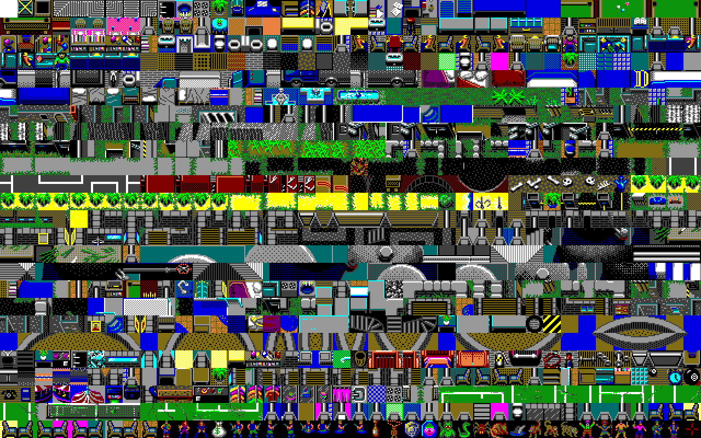

The tiles are stored in the TILES file. There are 1000 of them. It is compressed using an LZSS like compression. Each tile is 16x16 in size, although like other graphical assets, it is stored 8x16 and each nibble is significant and gets expanded to distinct colors.
The complete tile sheet is listed below (40x25):

Note that the last 30 tiles or so are used for PCs/NPCs and are often drawn on top of other tiles. The black background is replaced with the color underneith.